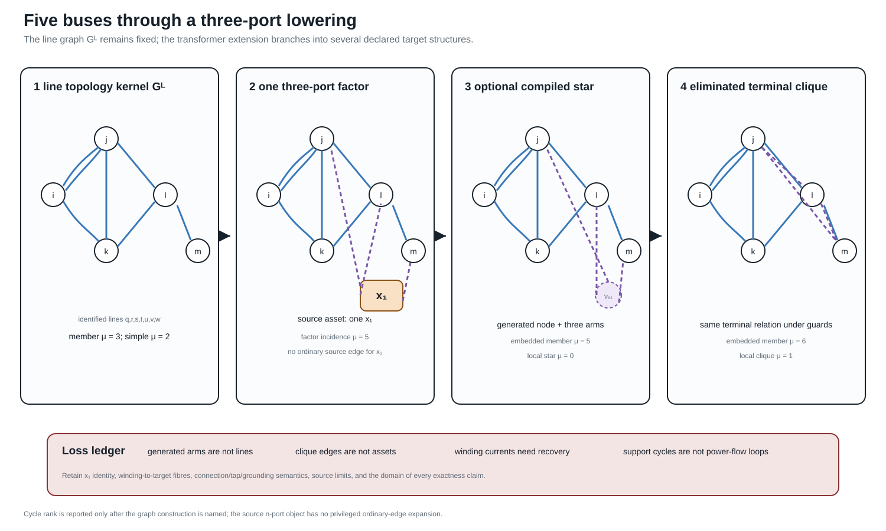
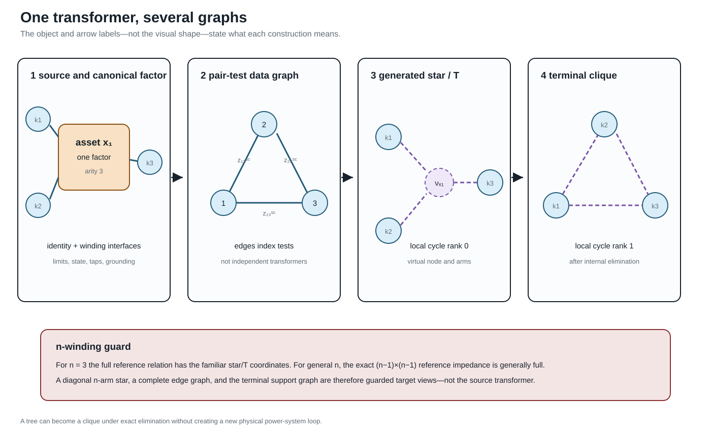

Five buses through a multi-port lowering
Page status: generated structural lowering example composed from the stable five-bus topology fixture and the checked three-winding transformer contract; it is not a complete transformer power-flow model.
The preceding five-bus multigraph deliberately uses only identified two-terminal lines. That restriction makes its incidence matrix, cycle space, simple projection, and spanning-tree coordinates unambiguous. This chapter keeps that line graph unchanged and adds a second, orthogonal question:
What happens when one genuinely three-port transformer must be presented to representations and algorithms with different device vocabularies?
The answer is not one longer reduction ladder. The source asset, its electrical factor, an optional ordinary-edge realization, an assembled operator, and the operator's support graph are different objects. Each has a different interface, and the valid targets branch according to the intended study.
The unchanged topology kernel
Retain the line-induced multigraph
\[G_L=(\mathcal B,\mathcal L,\partial), \qquad \mathcal B=\{i,j,k,l,m\}, \qquad \mathcal L=\{q,r,s,t,u,v,w\}.\]
Its member cycle rank remains $\mu_L=3$ and its simple projection remains at $\mu_{L,s}=2$. Adding another asset to the source inventory does not alter those statements because their domain is explicitly the line-induced graph $G_L$.
Now introduce transformer $x_1$ with winding set
\[\mathcal K_{x_1}=\{1,2,3\}, \qquad \beta_{x_1}(1)=j, \quad \beta_{x_1}(2)=l, \quad \beta_{x_1}(3)=m.\]
The labels $1,2,3$ here identify windings in this worked example; they are not claims that winding identities are intrinsically integer-valued. A source format may name the same ports $HV$, $LV$, and $tertiary$. The terminal ordering and any storage enumeration are separate declarations.
These attachments form a pedagogical structural extension. The electrical data and winding-interface semantics are inherited from the checked running transformer contract; this page does not pretend that moving that factor onto the five-bus drawing creates a new validated power-flow case.

The first panel is still $G_L$ and shows both members $q$ and $r$ of its parallel fibre. The second adds one factor of arity three, not three source lines. The third and fourth are generated targets. Some ranks coincide and others differ; neither fact establishes semantic equivalence because the edge and vertex types are different.
One transformer, several legitimate graphs

Four constructions must be separated.
Identified asset and three-port factor
At the source level, $x_1$ is one asset with three identified windings. At the canonical electrical level it is one factor $\phi_{x_1}$ with three ordered port bundles
\[\mathcal Q_{x_1} =\{p_{x_1 1},p_{x_1 2},p_{x_1 3}\}.\]
Each port carries its own voltage/current space, terminal order, connection map, limit observations, and winding identity. WYE and DELTA ports need not have the same terminal dimension. Factor arity is therefore not the number of scalar conductor terminals.
Pair-test data graph
Complete three-winding short-circuit input supplies the three pair-indexed quantities $z_{12}^{\mathrm{sc}}$, $z_{13}^{\mathrm{sc}}$, and $z_{23}^{\mathrm{sc}}$. Drawing these as the edges of $K_3$ is a useful data-incidence graph. The pair labels $12$, $13$, and $23$ identify tests between winding pairs; they are not entries of a three-by-three matrix. Its edges index tests; they are not three independent two-winding transformers and do not acquire independent outage states.
Generated star
For three windings, the familiar referred leakage coordinates may be drawn as three generated arms meeting at a virtual point $\nu_{x_1}$. Locally, this ordinary graph has four vertices, three edges, and cycle rank zero. Its arms are coordinate objects owned by $x_1$. Treating them as physical lines would invent asset identities, states, and permissible decisions.
Terminal clique after elimination
Eliminating $\nu_{x_1}$ generically produces direct pairwise terminal coupling. For generic pairwise leakage data all three off-diagonal blocks are structurally nonzero, so the support graph is $K_3$ and has cycle rank one. A proper subgraph requires structural decoupling or an exceptional numerical cancellation and must be justified from the coefficients. The cycle is an algebraic coupling cycle, not evidence that a new circulating power-system route appeared inside the transformer.
The transformer is a tree and the transformer contains a cycle can both describe exact target structures. Neither sentence is meaningful until it names the star realization, factor-incidence graph, terminal support graph, or another declared construction.
A general cycle-count statement
Let an $n$-port factor have distinct boundary attachments. Its local factor-incidence or star expansion has $n+1$ vertices and $n$ edges, hence
\[\mu_{\mathrm{star}}=n-(n+1)+1=0.\]
If elimination yields a structurally complete terminal support graph, its local clique has $n$ vertices and $\binom n2$ edges, hence
\[\mu_{\mathrm{clique}} =\binom n2-n+1 =\frac{(n-1)(n-2)}{2}.\]
For $n=3$, the two local counts are zero and one. The complete clique is the generic terminal support; if a coupling block is structurally absent or cancels numerically, the exceptional subgraph and its count must be declared. This is a statement about graph constructions, not a claim that elimination changes the physical asset.
Embedding the transformer into an already connected graph makes the same point more forcefully. Direct factor stamping adds no ordinary bus–branch object, so the line graph has $\Delta\mu=0$. A factor vertex joined to $n$ existing attachment vertices and a generated star both add $n$ member edges and one vertex, so each has $\Delta\mu=n-1$. Their equal count does not make their vertices equivalent: one is an equation/factor object and the other is a generated electrical coordinate. A complete generated clique instead adds $\binom n2$ identified member edges, hence $\Delta\mu=\binom n2$. For three ports these increments are respectively $0$, $2$, $2$, and $3$. They can all encode the same declared terminal behaviour under their guards. A simple projection may add fewer adjacencies where the source already contains an edge between two attachment buses. Therefore the phrase the transformer adds two cycles is no safer than the network is radial without a representation qualifier.
The recorded five-bus extension gives:
| Declared graph | Member cycle rank | Simple cycle rank | Interpretation |
|---|---|---|---|
| line-induced $G_L$ | 3 | 2 | seven identified source lines |
| subdivided line factors plus one three-port factor | 5 | 5 | bipartite factor-incidence graph |
| line members plus generated star | 5 | 4 | optional edge target with $\nu_{x_1}$ |
| line members plus generated terminal clique | 6 | 3 | eliminated terminal-coupling target |
The numerical values are useful diagnostics only when the row label travels with them.
Interfaces along the lowering branches
The source-to-target construction uses five stages, but the arrows need not visit all five:
\[\mathcal M_{\mathrm{asset}} \xrightarrow{C_{x_1}} \mathfrak P \begin{cases} \xrightarrow{A_{x_1}} \mathcal E, & \text{direct factor stamping},\\ \xrightarrow{L_{x_1}} G_{\mathrm{edge}} \xrightarrow{R_{\mathrm{internal}}} \mathcal E, & \text{guarded ordinary-edge branch}, \end{cases} \qquad \mathcal E\xrightarrow{S}G_{\mathrm{support}}.\]
Direct stamping is the default. The edge branch exists for a target algorithm that genuinely requires ordinary incidence. It is not an obligatory intermediate representation.
| Stage | Declared interface |
|---|---|
| source asset/property | transformer and winding identity, attachment relation, state, ratings, ownership, provenance |
| canonical port–factor | ordered winding voltage/current ports, constitutive relation, limits, controls, observations |
| ordinary-edge realization | boundary buses, generated IDs, source and winding fibres, current/constraint recovery |
| equation or operator | variable coordinates, residuals, constraint ownership, feasible set, recovery operator |
| support graph | block ordering and numerical-zero policy; no automatic asset or decision meaning |
An implementation should serialize this interface record beside the generated objects. The important question is not merely whether a reverse graph map exists, but whether the source quantities needed by the study can be evaluated from the target solution.
Where power-system structure is lost
The representation can remain electrically exact while becoming structurally unsafe. The following omissions are especially important:
| Boundary | Structure at risk if it is not carried separately |
|---|---|
| asset to factor | ownership, maintenance, common-mode failure, source nameplate meaning |
| factor to generated edges | one-device identity, winding identity, connection and tap semantics, excitation, grounding, winding limits |
| generated edges to assembled operator | internal current recovery, virtual-object provenance, source constraint ownership |
| operator to support graph | coefficients, signs, constitutive meaning, feasible set, decisions and objectives |
An exact terminal leakage relation does not authorize independent switching, outage, investment, or rating decisions on generated star or clique edges. Those target objects remain in the provenance fibre of $x_1$. Winding and coil limits remain source constraints evaluated through a recovery map.
Grounding and shunts are a particularly dangerous case. Magnetizing branches, core loss, neutral grounding, and connection-specific shunts may attach at a particular winding or internal coordinate. A target line model that permits only identical from/to shunts cannot silently absorb these objects into symmetrical generated edges.
Three windings do not define the general case
For $n_x=3$, complete pairwise leakage data have the familiar star/T coordinates
\[z_1=\tfrac12(z_{12}+z_{13}-z_{23}), \quad z_2=\tfrac12(z_{12}+z_{23}-z_{13}), \quad z_3=\tfrac12(z_{13}+z_{23}-z_{12}).\]
This special case should not become the ontology for an arbitrary multiwinding transformer. For general $n_x$, the exact reference-coordinate matrix is $(n_x-1)\times(n_x-1)$ and is generally full. A diagonal $n_x$-arm star is therefore a restricted target model, not the automatic meaning of complete pairwise data. The full derivation and its round-trip test are in Multiwinding leakage reference compilation.
Even for three windings, a star arm can have negative reactance while the reference reactance matrix remains positive semidefinite. The composed witness uses positive pair-test reactances $(x_{12},x_{13},x_{23})=(1,1,3)\ \Omega$. Its generated star coordinates are $(-0.5,1.5,1.5)\ \Omega$ in reactance, while the eigenvalues of the reference reactance matrix are $(0.5,1.5)\ \Omega$. Reinterpreting the negative arm as a conventional line would therefore trigger an invalid componentwise passivity rejection even though the invariant matrix guard passes. The guard belongs to the compiled matrix relation, not to the visual intuition of three ordinary lines.
An evaluated four-winding companion
The three-winding construction is a useful diagram, but it is not the limit of the architecture. The companion artifact experiments/generated/four-winding-lowering-witness.json evaluates a four-winding factor with four ordered ports: three WYE ports and one DELTA port. Its reference-coordinate impedance has dimension $3\times3$ and is deliberately non-diagonal. The pairwise short-circuit data are generated from that full matrix and recovered after compilation, so the example does not silently replace a general reference matrix by independent star arms.
The evaluated target keeps the following objects separate:
| Source meaning | Evaluated target | Why it remains explicit |
|---|---|---|
| winding and connection identity | ordered WYE/DELTA port maps | terminal dimensions and incidence differ |
| shunt on winding 2 | WYE coil-coordinate shunt map | placement is not a generic line parameter |
| shunt on winding 3 | DELTA coil-coordinate shunt map | the same numerical matrix has a different connection meaning |
| neutral grounding | two internal terminal grounding maps | grounding scope is not inferred from a bus label |
| tap and phase settings | two pointwise equation operators | a decision state is not frozen into one source object |
| winding current limits | recovery and constraint maps | limits remain attached to winding identity |
The control states are intentionally finite and explicit: one state uses a lower tap on winding 2 and a leading phase shift on winding 4, while the other uses a higher tap and a lagging shift. Each state is compiled with fixed coefficients, and the witness checks that the resulting terminal operators differ, that both decision identities survive, and that terminal currents and complex power recover through the leakage, shunt, and grounding maps.
This is a pointwise exact compilation family, not a claim that a single static $Y$ contains the whole decision problem. The source decision domain remains outside each fixed-state operator. Nor does the availability of a terminal operator imply an ordinary-edge transformer surrogate: the witness records the ordinary-edge branch as not asserted until an independent n-port realizability condition is supplied. The four-winding result is registered as $ARCH-LOWER-002$.
Executable composition and evidence boundary
The generated artifact experiments/generated/five-bus-transformer-lowering-witness.json is registered as ARCH-FIVEBUS-XFMR-001. It hash-binds and composes three existing evidence objects:
- the five-bus cycle-space analysis;
- the ordered three-winding terminal lift; and
- the exact pairwise-leakage reference compilation.
Its checks verify the local and embedded cycle counts, one-factor/three-port identity, the declared three-winding special case, the numerical negative-arm guard, winding identity, and the continued presence of grounding and current-limit observations. This is direct evidence for the structural maps and loss ledger. It is not a new AC solve, a general $n$-port realizability theorem, or permission to compile every transformer into ordinary edges.
The detailed terminal connection and current-recovery equations remain in Multiwinding terminal leakage assembly. The broader formulation alternatives remain in Circuit formulations and the lowering boundary.